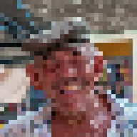

Pixeleren

Maakt van de laag blokken van elk één kleur, genomen uit het midden van het blok, op een raster dat gecentreerd is op de laag (of op het beeld met Schermruimte). Uitrekken, Verschuiving en Hoek bepalen het raster en Vignet maakt elk blok naar de randen toe donkerder.
Pixeleren maakt van het beeld grote vierkante blokken. Grootte stelt de blokgrootte in: 1 is bijna geen verschil, 500 is een paar enorme blokken. Uitrekken maakt de blokken breder of hoger, Hoek draait het raster en Vignet maakt elk blok naar de rand toe donkerder. Animeer Grootte van groot naar klein om een beeld te onthullen, of andersom om iets te verbergen.
Instellingen
| Instelling | Type | Bereik | Standaard |
|---|---|---|---|
| Grootte | Getal | 1 tot 500 | 20 |
| Uitrekken | Punt (X, Y) | 0.01 tot 100 | 1, 1 |
| Verschuiving | Punt (X, Y) | -5000 px tot 5000 px | 0 px, 0 px |
| Hoek | Hoek | -3600° tot 3600° | 0° |
| Vignet | Getal | 0% tot 100% | 0% |
| Schermruimte | Aan of uit | – | Uit |
| Randen | Keuze | Spiegelen, Transparant | Spiegelen |
| Drempel | Getal | 0% tot 100% | 0% |
| Stijl | Keuze | Klassiek, Standaard | Klassiek |